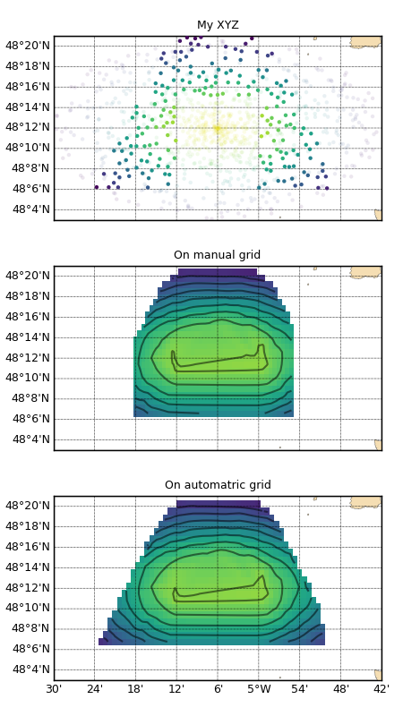

1.3.4.2.1.1. Les bases d’une bathy XYZ¶
Voir : XYZBathy map()

En haut, points bathymétriques éparses ayant subit un triangle de selection et un rectangle d’exclusion. Au milieu, les points sont interpolé/extrapolés sur une grille définie manuellement. En bas, de même mais la grille est entièrement définie automatiquement (extensions et résolution).
# %% Modules
import numpy as N, os
from vacumm.bathy.bathy import XYZBathy
import pylab as P
from vacumm.misc.grid.basemap import merc
from vacumm.misc.grid import create_grid, resol
from vacumm.misc.plot import map2
# %% Fake XY bathy
n = 1000 ; xc = -5.1 ; yc = 48.2 ; xr = .4 ; yr = .15
noise = N.random.random(n)
a = N.random.random(n)*N.pi*2
r = N.random.random(n)
x = xc + r*xr*N.cos(a)
y = yc + r*yr*N.sin(a)
bathy = N.asarray([x, y, N.exp(-(x-xc)**2/xr**2-(y-yc)**2/yr**2)*30.+noise]).transpose()
fbathy = __file__[:-2]+'xyz'
N.savetxt(fbathy, bathy)
# %% Load XYZ with undersampling
xyz = XYZBathy(fbathy, long_name='My XYZ', rsamp=0.01)
# on aurait pu charger directement :
# >>> xyz = XYZBathy(bathy)
# %% Add a selection zone
# -> triangulaire, par coordonnees [[x1,y1],...]
xyz.select([[-5.4, 48.1], [-4.8, 48.1], [-5.1, 48.5]])
# %% Add an exclusion zone
# -> rectangulaire, par coins [xmin,ymin,xmax,ymax]
xyz.exclude([-5.2, 48., -5, 48.25])
# %% Info
print xyz
# %% Get data
x = xyz.x
y = xyz.y
z = xyz.z
# %% Extensions
# - en tenant compte des zones de selection et exclusion
print 'Limites:', xyz.xmin, xyz.xmax, xyz.ymin, xyz.ymax
# - donnees brutes
print 'X min brut:', xyz.get_xmin(mask=False), xyz.get_x(mask=False).min()
# %% Mean resolution
print 'Resolution in degrees:', xyz.resol(deg=True)
print 'Resolution in meters:', xyz.resol()
# %% Automatic grid
grid_auto = xyz.grid
print 'Resolution of auto grid:', resol(grid_auto)
# %% Interpolation on auto grid
print 'Interpolation:'
gridded_auto = xyz.togrid()
# equivalent a :
# >>> gridded_auto = xyz.togrid(xyz.grid)
# %% Interpolation on manual grid
print 'Interpolation and masking, then extraction'
# - defintion
grid_manual = create_grid((-5.3, -4.91, .01), (48.1, 48.41, .01))
# - interpolation
gridded_manual = xyz.togrid(grid_manual, mask='h')
# - extraction with margin
xyz_up = xyz.clip(zone=(None, None, None, 48.3), margin=2)
# - si None, valeurs limites internes (i.e xyz.xmin(), ...)
# - margin : marge relative en unite de resolution
# -> ici : ymax = 48.3 + xyz.resol()[1]*2
# %% Save
print 'Save'
prefix = __file__[:-2]+'up'
xyz_up.save(prefix+'.xyz') # ascii
xyz_up.save(prefix+'.nc') # netcdf/grd
# %% Plots
print 'Plots'
# - init
P.figure(figsize=(4.5, 8))
P.rc('font', size=8)
P.subplots_adjust(top=.95, hspace=.25, left=.1, bottom=.05, right=.98)
m = map2(lon=(xc-xr, xc+xr), lat=(yc-yr, yc+yr), proj='merc',
subplot=311, autoresize=0, resolution='f', show=False, drawmeridians_rotation=45,
ticklabel_size=9, xhide=True)
kwplot = dict(vmin=xyz.get_zmin(False), vmax=xyz.get_zmax(False),
m=m, show=False, colorbar=False)
# - xyz
xyz.plot(size=10, mode='both', masked_alpha=.1, **kwplot)
# - manual interpolation
kwplot.update(autoresize=0, ticklabel_size=9)
map2(gridded_manual, subplot=312, xhide=True, title='On manual grid', **kwplot)
# - auto interpolion
map2(gridded_auto, subplot=313, title='On automatric grid', savefigs=__file__,
close=True, **kwplot)
#P.show()